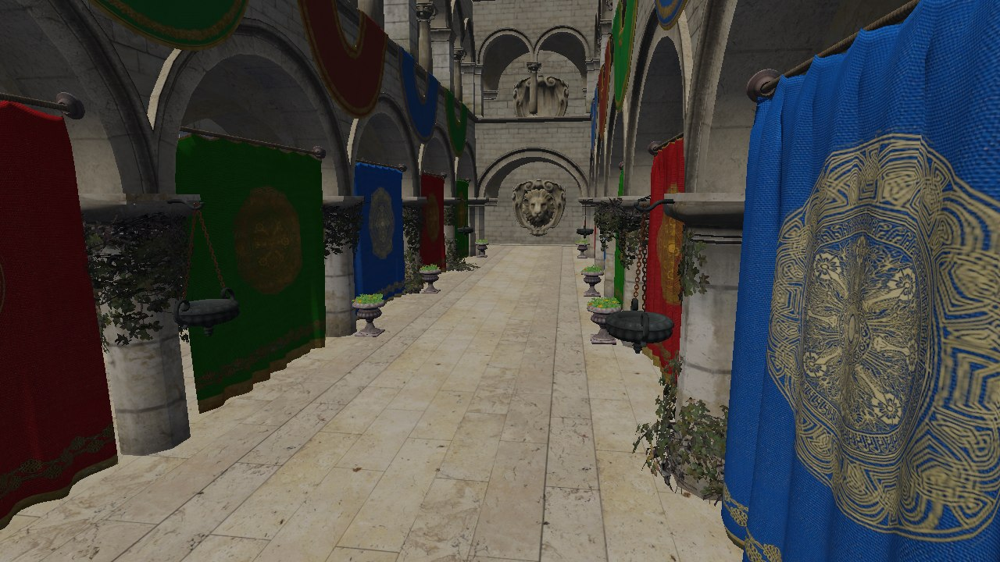
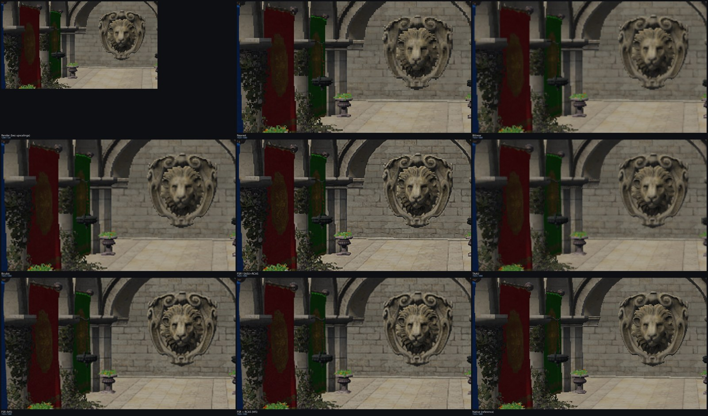

FSR3-lite — završni rad
Vlastiti renderer u C++20 i OpenGL 4.6 compute shaderima renderira scenu na sniženoj rezoluciji, rekonstruira je do izlazne rezolucije (EASU/RCAS, TAAU, dilatacija vektora, disokluzija, lockovi), i usporedno renderira pravi native okvir kao referencu — pa je kvaliteta dolje brojka (PSNR/SSIM), a ne dojam.
Isti okvir, ista kamera. Prvi tab je stvarni frame buffer prije ikakve rekonstrukcije — 1280×720, razvučen na ekran bez filtra (otud "blokovi"). Drugi je izlaz punog upscalera (FSR + RCAS, M5) iz istog niskorezolucijskog renderiranja. Treći je native 1920×1080 render iste scene, iskorišten kao mjerna referenca.

Snimljeno binarnim izlazom projekta (--shot), skriptirana kamera, frame 80, Sponza glTF scena. Slika 1 blago je komprimirana za web; sirovi PNG snimci reproduciraju se lokalno preko scripts/compare_upscalers.py.
Brojka kaže koja je metoda bliža referenci; ne kaže kako griješi. Isti izrezan detalj (lav na zidu), uvećan 5×, kroz svih šest upscalera plus sirovi render i native referencu — nazupčanost kod nearest, mekoća kod bilinear/bicubic, stabilizacija ruba kod FSR-a i TAAU-a.

Generirano skriptom scripts/compare_upscalers.py — izrezuje isti okvir kroz sve upscalere i slaže mrežu za usporedbu.
Sponza, Quality 1.5× (1280×720 → 1920×1080), 104 okvira, skriptirana kamera pri
60 fps orbiti. Pune tablice — uključujući Performance/Balanced/Ultra Performance,
ablacije i mjerenja na drugom GPU-u — u captures/metrics/summary.md.
decibeli, više je bolje
okviri u sekundi, Sponza @ 1080p izlaz
| Upscaler | PSNR (dB) | SSIM | GPU (ms) | FPS (GPU) |
|---|
GPU ms po okviru — zašto se uopće isplati renderirati manje
Renderiranje na 720p umjesto na native 1080p smanji GPU trošak s 0.33 ms na 0.19 ms po okviru na istoj sceni — upscaler zatim taj manji okvir rekonstruira natrag na punu rezoluciju za dodatnih ~0.12–0.14 ms, uz gubitak od par decibela PSNR-a naspram punog native rendera. Otud isplativost upscalinga.